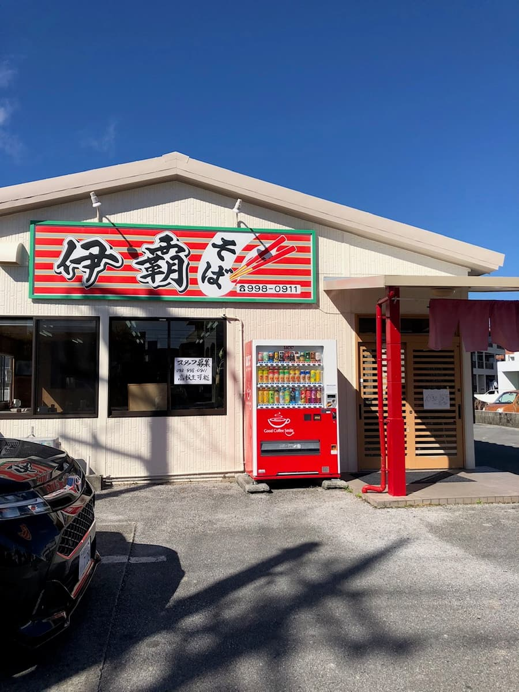
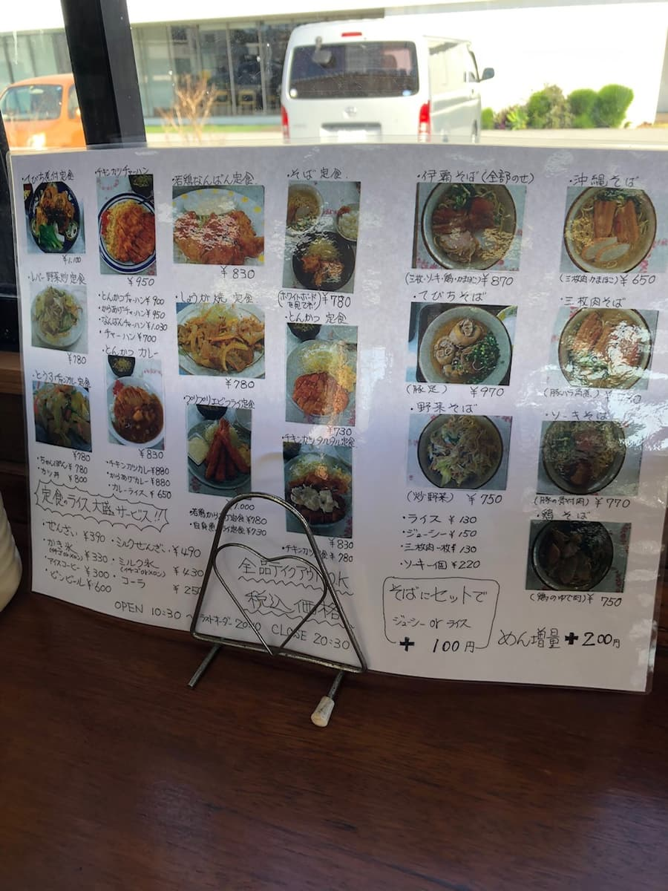
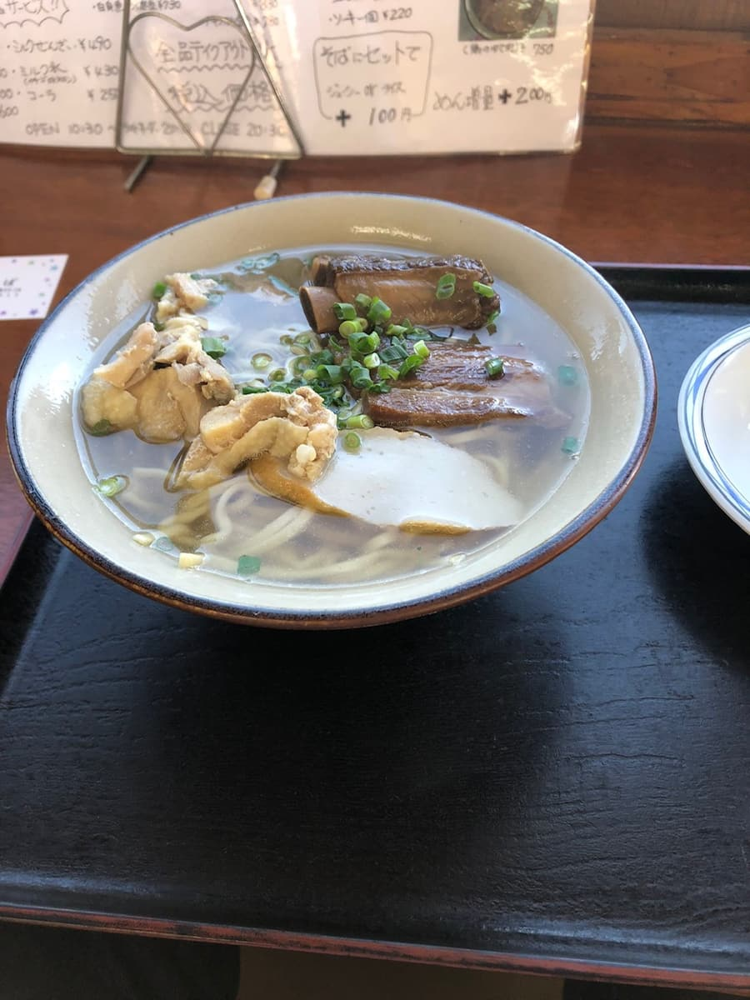

2023.1に波乗り帰り（糸満市スーサイドクリフポイント）に前から気になっていたので入って見ました☺

事前情報無しで入ったのでとりあえず、店名と同じ「伊覇そば」を注文。メニュー表に「全部のせ」と書いてあったので、いつもの「三枚肉（豚の胴のお腹の部分）、ソーキ（豚の骨付きあばら肉）、てびち（豚足）」と思っていたら。。


「あっ、具が何か違う」と思いながら、先ずは最初にスープを一飲み。「あれ、スープの味も何か違う」と思い、さらにスープ一飲み。やっぱ違う。
普通、沖縄そばのスープは豚骨だし、かつおだし、煮干し、昆布などの合わせだして、豚骨を効かせたり、かつおベースの場合はかつおを効かせたりするみたいですが、他店には無い初めて体験する味。
そこで、ググって見たら、伊覇そばさんは「鶏がらベース」とのこと。
なるほど、だから具にも鶏肉を採用なのか☺
普通に鶏肉、鶏だしスープ、沖縄そばに合うと思いました。美味しかったです。
評価（9.5点/15点）：普通に美味しいです。鶏肉、鶏だしスープ美味しいですよ。普通のそばに飽きた方は如何でしょうか。新鮮に感じます。
麺 ：★★★☆☆（3）
スープ：★★★✬☆（3.5）
具 ：★★★☆☆（3）